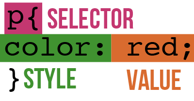

To get started with CSS, it's best to show you what sort of thing you will be learning. So, below, I will show you a bit of code:
color: red;
font-size: 16px;
width: 100%;
}
This is just a small look into what you will be learning in this section. This may seem a bit strange to look at initially, but once you know what all of the parts mean, you'll be able to write this yourself, and even visualize what it will look like.
First off, we'll start with the p in the top left. You will recognize this from HTML, the paragraph element. This is intentional, as this is known as a selector. This means that this section of code will be editing all p elements. You can narrow this down to specific elements, but we will learn that later. After this, we have a curly bracket. This always immediately follows the selector, though it can go on the next line if you prefer. The segment of code ends with another curly bracket, and this tells the computer that after this, the code no longer affects the p elements. That is when you can start another segment of code, this time editing a div element, perhaps.
In between the curly brackets, however, is where the true power of CSS lies. These are the individual styles, and they are what determines how the element looks. Each line affects a different part of the element. I'll explain the ones given, but there will be many more in the next section. First off, you will notice that there is a word, a colon, some text, and then a semicolon. The first world is the style that is affected, such as color, which affects the color of the text. After that, the color separates the style from it's value. After that is the value, which is 'red' for the color. This is what tells the computer what do set the style to. In the first case, it sets the color of the text to red. After that, there is a semicolon. The semicolon is a habit that was carried over from more complicated code, where every line of code had to end with a semicolon. It is still used in CSS and it is crucial to put it at the end of every line, as browsers require it to tell lines apart.
Now that you have had the structure laid out, you can now figure out what the other lines of code mean. The second line is setting the size of the font to sixteen pixels, and the third is setting the width of the element to 100% the width of the element that is containing it.
Now that you know how CSS works, you need to know where to put it. This, luckily, is prettyt simple. For now, we will put it in a new tag in the header, the style tag. This is relatively self explanatory, but we'll show you a little code sample.
<html>
<head>
<style>
p{
color: red;
font-size: 16px;
width: 100%;
}
</style>
</head>
<body>
<p>Hello there!</p>
</body>
</html>